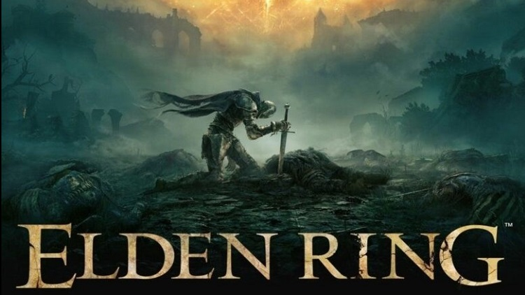

Elden Ring ganha o Joystick de Ouro de 2022.
s O título da FromSoftware se torna o GOTY do Golden Joystick Awards.
Elden Ring foi o grande premiado da noite no Golden Joystick Awards. Com quatro troféus conquistados, o RPG da FromSoftware também foi um dos indicados como Jogo do Ano de 2022, categoria na qual saiu como vencedor em meio a outros grandes games de sucesso.
O título levou para casa as premiações das seguintes categorias:
- • Melhor design visual;
- • Melhor jogo multiplayer;
- • Prêmio por escolha dos críticos;
- • Jogo do Ano;
Para garantir o GOTY de 2022 do Golden Joystick Awards, Elden Ring disputou a taça com:
- • Gran Turismo 7
- • Horizon Forbidden West
- • Immortality
- • Mario + Rabbids: Sparks of Hope
- • God of War: Ragnarok
- • Return to Monkey Island
- • Teardown
- • Xenoblade Chronicles 3
- • Bayonetta 3
- • Call of Duty: Modern Warfare 2
- • Neon White
Elden Ring também foi indicado ao GOTY no The Game Awards. Segundo último relatório divulgado pela Bandai Namco, ao lado de Digimon Survive e Taiko Drum Master, o RPG vem apresentando um bom desempenho no mercado — e atingiu 17,5 milhões de unidades vendidas.
Fonte:MeuPlastation